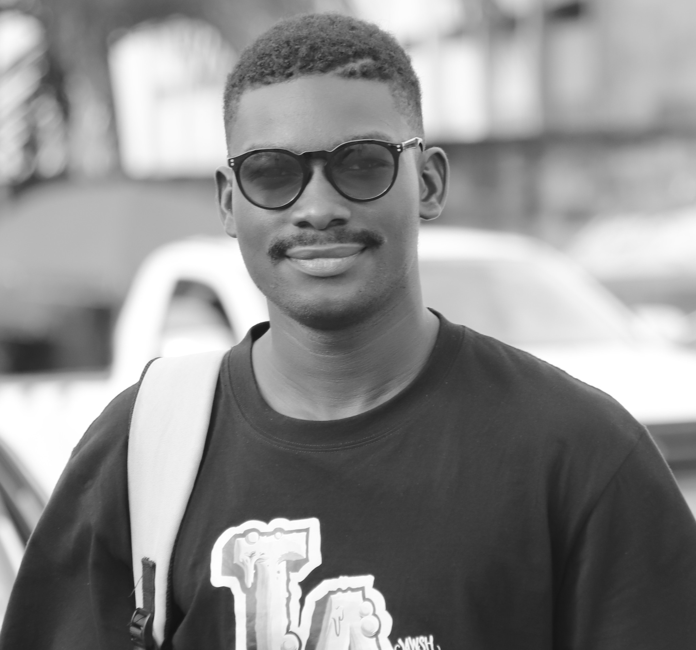

COORDONNEE
COMPETENCES
- Suite microsft office
- Python
- Navigation internet
- HTML & CSS
- Informatiques
- Installations logiciels
- Création de machines virtuelles
- Changement de système d'exploitation
- Recupération de données depuis un disque dur
- Récuperation de mot de passe
- Réparation de disque
- Maintenance des machines
- Mise à jour et téléchargement des pilotes
CENTRES D'INTERÊtS
- Mathématiques et logique
- Technologies & cybersécurité
- Course à pied
- Lecture et développement personnel
EVOUNA LEHOUMBOU Morgan Chamberlain
Etudiant
SYNTHESE PROFESSIONNELLE
Personne motivée et dotée d'une solide éthique
professionnelle. Je suis une personne rigoureuse, sérieuse
avec un esprit analytique solide. J’apprends vite et je m’adapte facilement
aux nouveaux outils. J’aime résoudre les problèmes de manière méthodique et aller
au bout des choses. Organisé et autonome, je sais travailler
avec précision et garder mon sang-froid.
FORMTION
L2 mathématiques appliquées 2025
UNIVERSITE OMAR BONGO
L1 mathématiques appliquées 2024
UNIVERSITE OMAR BONGO
Baccalauréat scientifique en 2022
Lycée catholique Mgr Jean Jérôme Adam
Brevet d'études du premier cycle en 2019
Lycée catholique Mgr Jean Jérôme Adam
PARCOURS PROFESSIONNELLE
Stagiaire à KLMJ-Servives FCV 2024 (2 mois)
- Installation logiciels
- Récupération de données
- Installation de caméras de surveillances
- Maintenance informatique
- Changement de système d'exploitation
main d'oeuvre à la Croix rouge 2023(3 jours)
- Distribution de médicaments
- Sensibilisation contre les vers intestinaux
Employé polyvalent dans un magazin 2017(2 mois)
- Vérification des stocks
- Réception • Nettoyage